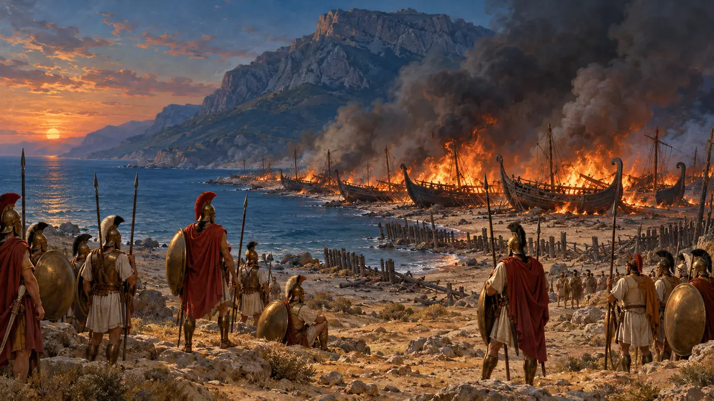
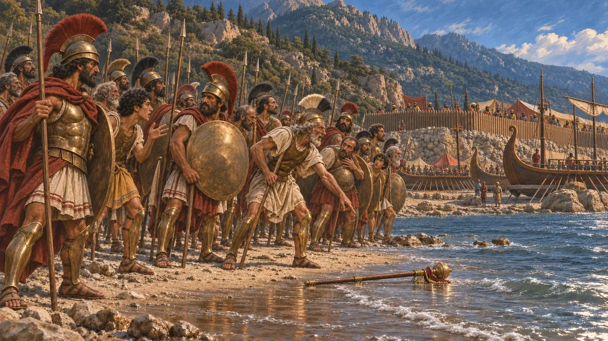
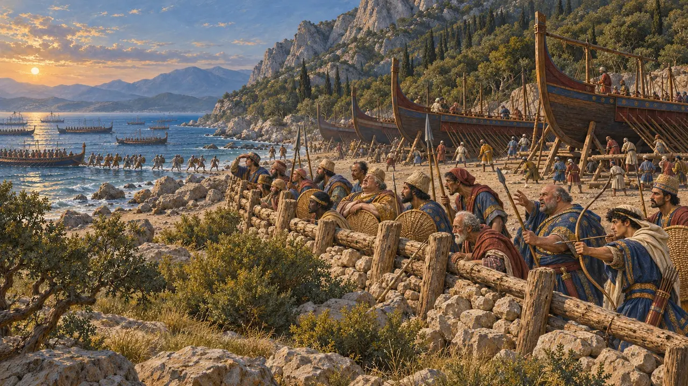
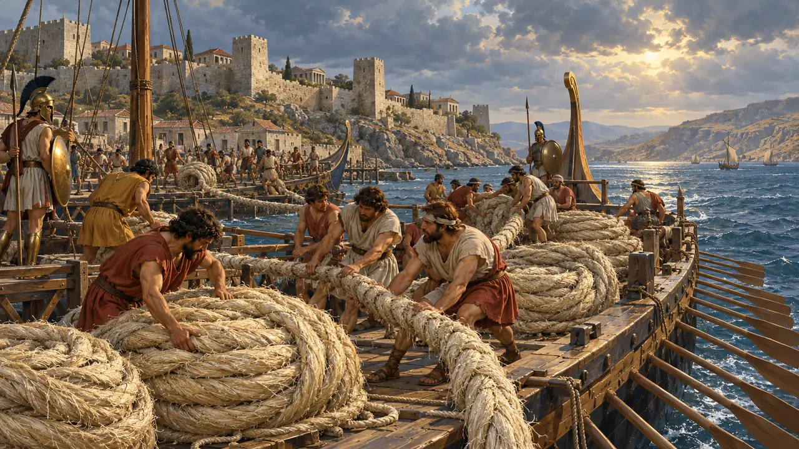
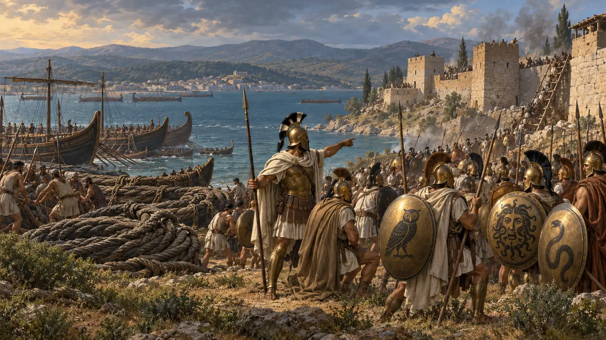
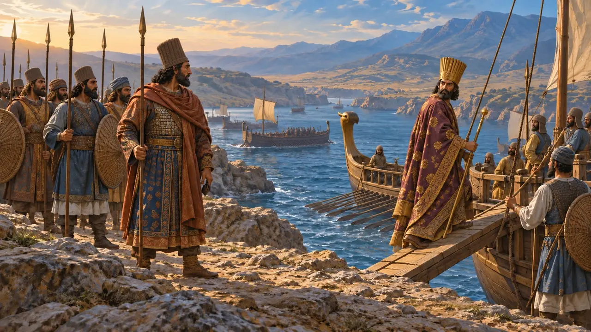
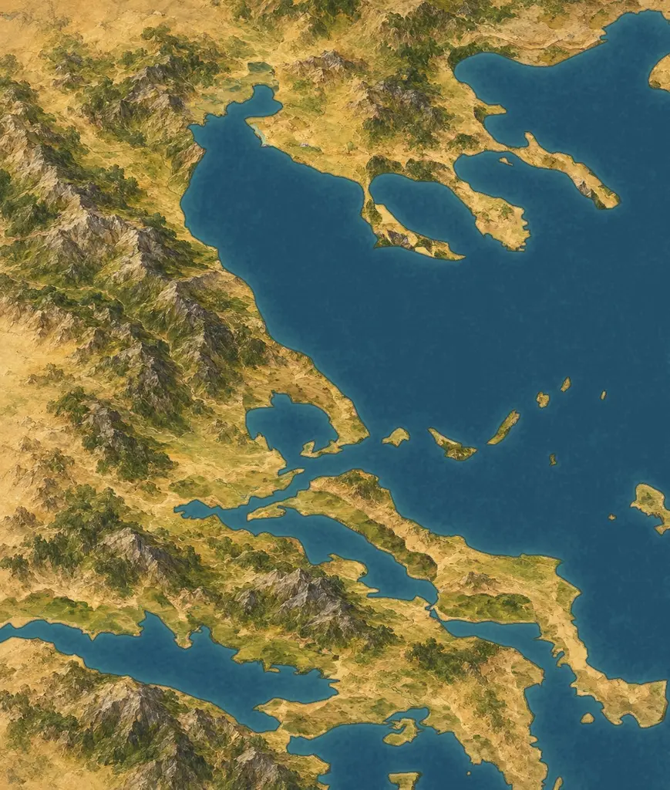

에필로그: 미칼레 · 미칼레와 헬레스폰토스 · 기원전 479년
미칼레
기원전 479년, 이오니아 해안의 미칼레에서 대왕의 함선들이 불탄다.
백과사전 › 역사
플라타이아 전투와 같은 날, 그리스 함대는 사모스 맞은편 미칼레에 상륙하여 페르시아의 목책을 급습하고 함선들을 불태웠다. 이오니아는 다시 봉기했다. 기원전 480-479년의 전쟁은 아테네인들이 헬레스폰토스 다리의 밧줄을 고국으로 가져가는 것으로 끝났다.

- 기원전 479년 미칼레
- 478 BCE 세스토스 함락
- 478 BCE 델로스 동맹
- 465 BCE 크세르크세스 암살
- 387 BCE 왕의 화약
- 330 BCE 알렉산드로스

해변의 소문
고대의 전승그리스군이 공격에 나설 때 해변에서 전령의 지팡이가 발견되었고, 그리스군이 보이오티아에서 승리했다는 소문이 온 군대에 퍼졌다. 헤로도토스는 이를 신들이 내린 징표로 여긴다. 두 전투는 같은 날 벌어졌다.
게임에서: 플라타이아 다음에는 같은 날 오후에 벌어진 미칼레 전투 구간이 이어진다.
Herodotus 9.100-101

목책
고대의 전승페르시아인은 배를 해안에 끌어올리고 돌과 말뚝으로 쌓은 방벽 뒤에 두었다. 그들은 믿지 못하던 사모스인의 무장을 해제했다. 전투 중에 이오니아인이 편을 바꾸었고, 진영은 함락되고 배들은 불탔다.
Herodotus 9.96-106

헬레스폰토스의 밧줄
고대의 전승그리스인은 다리를 끊으러 항해했으나 다리는 이미 무너져 있었다. 아테네인은 가을까지 세스토스를 포위하여 함락시켰고, 그 밧줄을 고향으로 가져가 신전에 봉헌했다.
Herodotus 9.114-121

세스토스 포위전
고대의 전승대왕의 총독 아르타익테스는 케르소네소스의 페르시아인들과 함께 세스토스를 지켰다. 크산티포스가 이끄는 아테네인은 가을까지 포위를 이어갔고, 수비군은 침상의 가죽끈까지 삶아 먹기에 이르렀다. 아르타익테스는 밤에 몰래 빠져나갔으나 붙잡혀 해변에서 처형되었다.
게임에서: 에필로그 이후 세스토스는 독립된 전장이 된다. 성벽 안에서 도시를 지켜라.
Herodotus 9.114-120

고국의 크세르크세스
당대 기록크세르크세스는 페르세폴리스에서 건설을 이어갔다. 만국의 문과 자신의 궁전을 세웠고, 백주실도 착공했다. 그의 비문은 그리스에서의 전쟁을 한 번도 언급하지 않는다. 기원전 465년 그는 궁전에서 살해되었는데, 음모에 관한 기록은 서로 엇갈린다.
Persepolis inscriptions XPa, XPf; Diodorus 11.69; Ctesias

누가 무엇을 얻었는가?
분쟁 중그리스인에게 이것은 지켜낸 자유였다. 대왕에게는 패배한 변경 전쟁이었다. 제국은 이오니아 해안을 제외한 에게해 동쪽의 모든 것을 지켰다. 한 세기도 지나지 않아 페르시아의 금이 그리스 도시들을 매수해 서로 싸우게 했고, 기원전 387년에는 대왕이 그리스의 강화 조건을 정했다.
Xenophon, Hellenica 5.1.31; Briant (2002) chapters 13-16

오래도록 이어진 제국
당대 기록키루스가 세우고 다리우스가 정비한 제국은 에게해에서 인더스강까지 다시 한 세기 반 동안 유지되었고, 기원전 334년에서 330년 사이 알렉산드로스에게 정복되었다. 그 도로와 사트라피, 배급 점토판은 그리스와의 전쟁보다 오래 살아남았다.
Arrian, Anabasis 3.18, 6.29